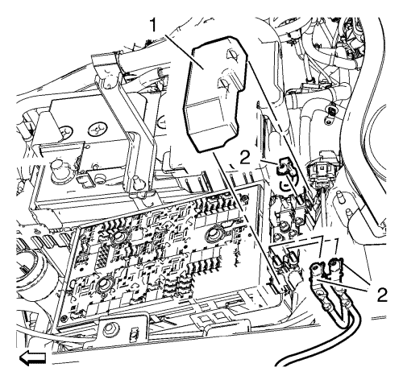
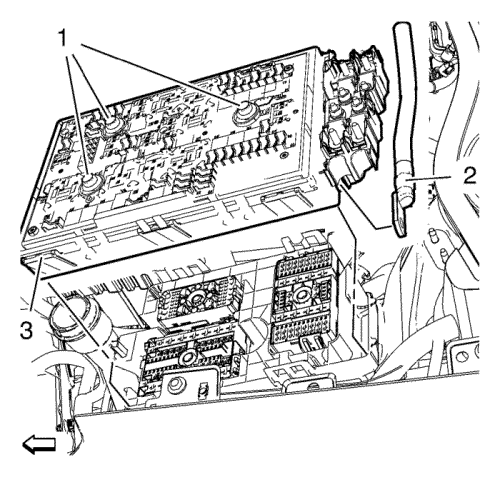
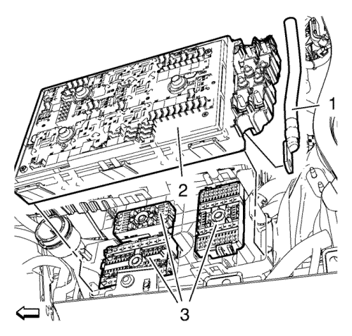
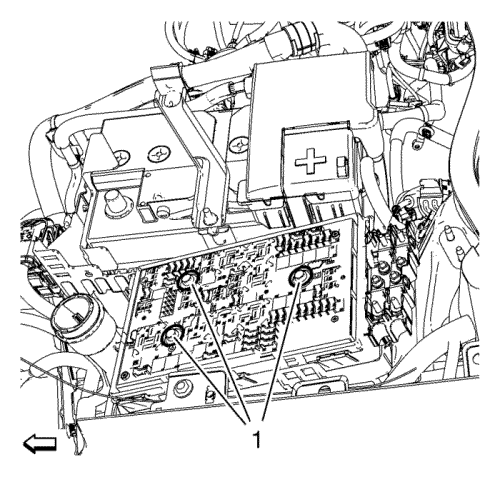

Sustitución del bloque de fusibles del habitáculo delantero
Procedimiento de desmontaje
- Desconecte el cable negativo de la batería. Consultar Desconexión y conexión del cable de batería negativo
- Desmonte la cubierta del bloque de fusibles del compartimento delantero. Consultar Sustitución de la cubierta del bloque de fusibles del habitáculo delantero

- Abra la tapa de la carcasa del bloque de fusibles del compartimento delantero (1) y desmonte las 3 tuercas del mazo de cables de la columna de dirección (2).

Nota: Los pernos (1) quedan retenidos en el extremo de las roscas para que no puedan ser retirados del bloque de fusibles.
- Desmonte los 3 pernos del bloque de fusibles del compartimento delantero (1) y el suministro del mazo de cables del bloque de fusibles del compartimento delantero (2).
- Suelte las lengüetas de retención y desmonte el bloque de fusibles del compartimento delantero (3).
Procedimiento de montaje

- Empuje hacia abajo los 3 conectores eléctricos (3) antes de instalar el bloque de fusibles del compartimento delantero (2).
Precaución: Consulte Precaución con las fijaciones en la sección Prólogo
- Monte el suministro del mazo de cables del bloque de fusibles del compartimento delantero (1) y apriételo a 12 N·m (106 lib. pulg.).

- Monte los 3 pernos del bloque de fusibles del compartimento delantero (1) y apriételos a 7,2 N·m (64 lib. pulg.).
- Monte las 3 tuercas del mazo de cables de la servodirección (2) y apriételos a 4,7 N·m (42 lib. pulg.).
- Cierre la cubierta de la carcasa del bloque de fusibles del compartimento delantero (1).
- Monte la cubierta del bloque de fusibles del compartimento delantero. Consultar Sustitución de la cubierta del bloque de fusibles del habitáculo delantero
- Conecte el cable negativo de la batería. Consultar Desconexión y conexión del cable de batería negativo
| © Copyright Chevrolet. All rights reserved |